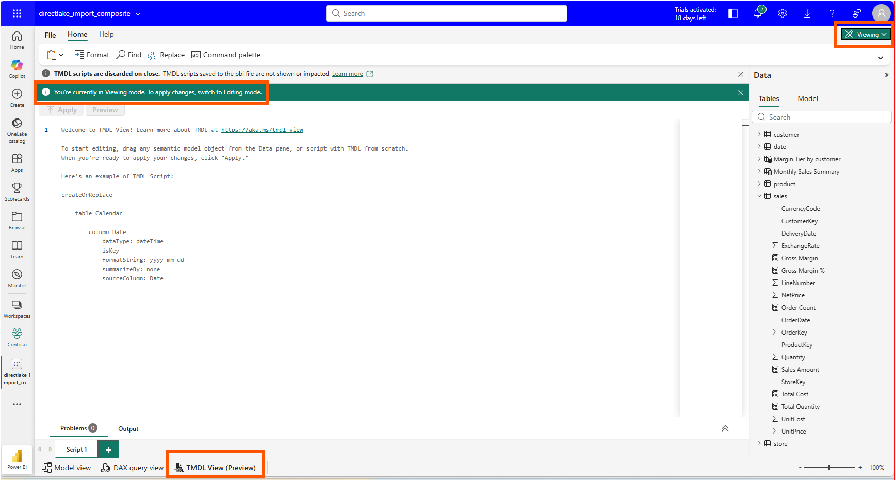
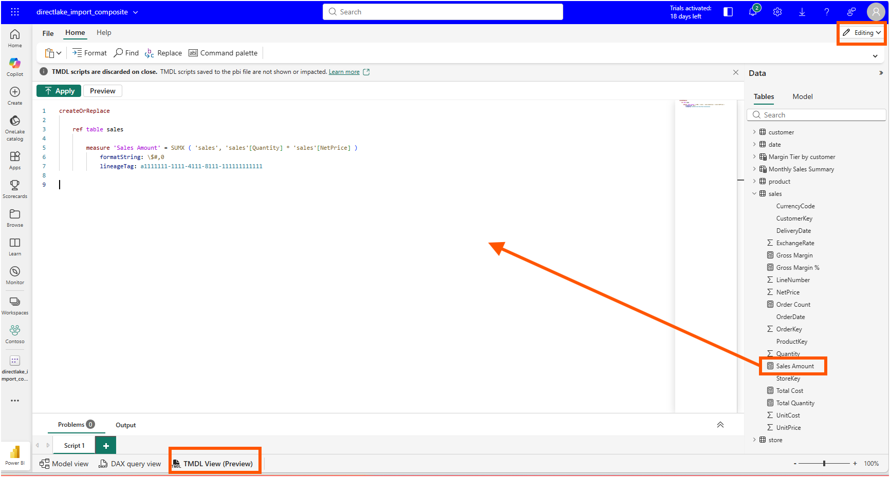
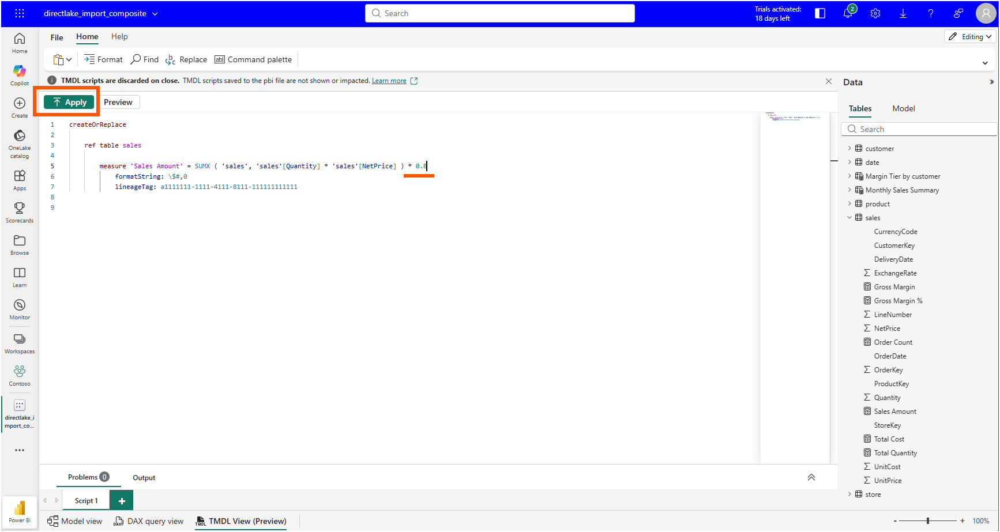
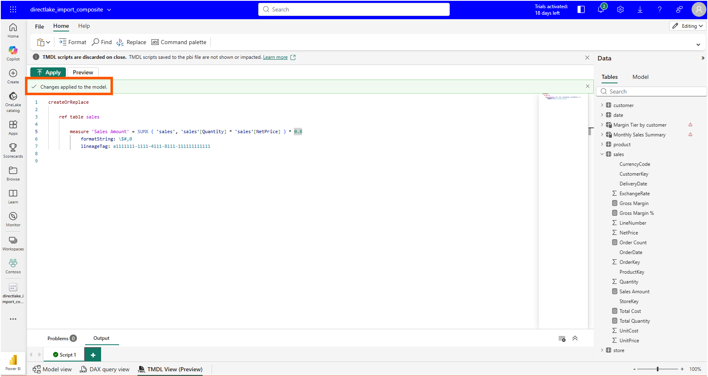
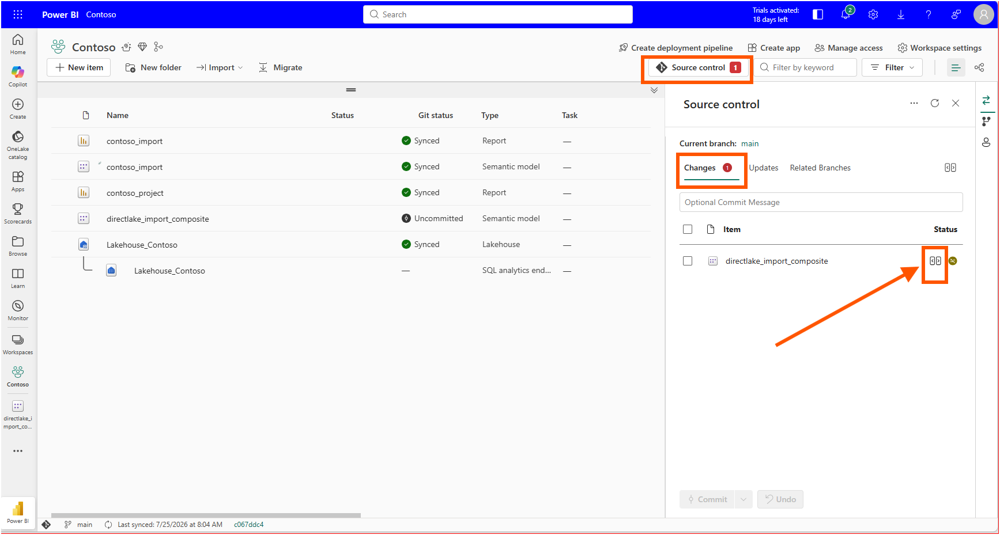
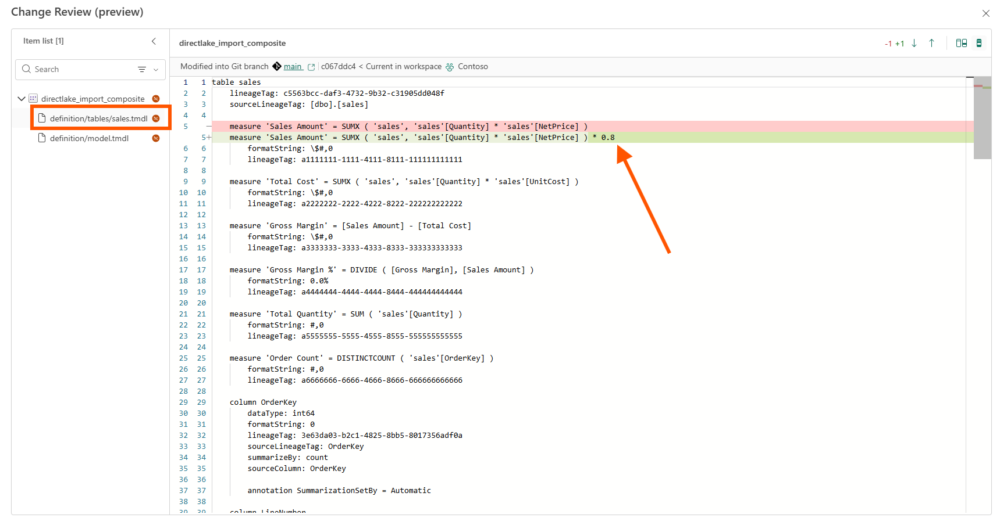
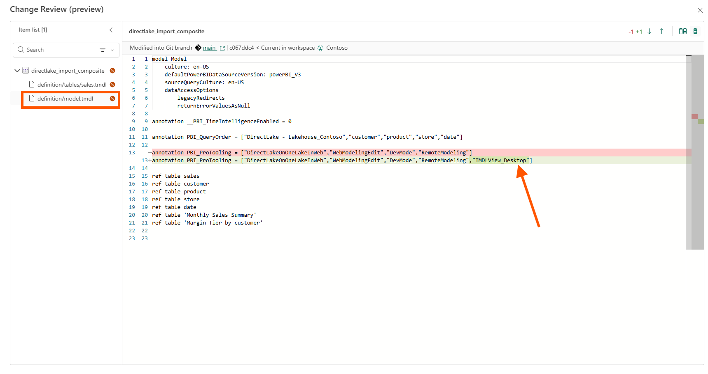
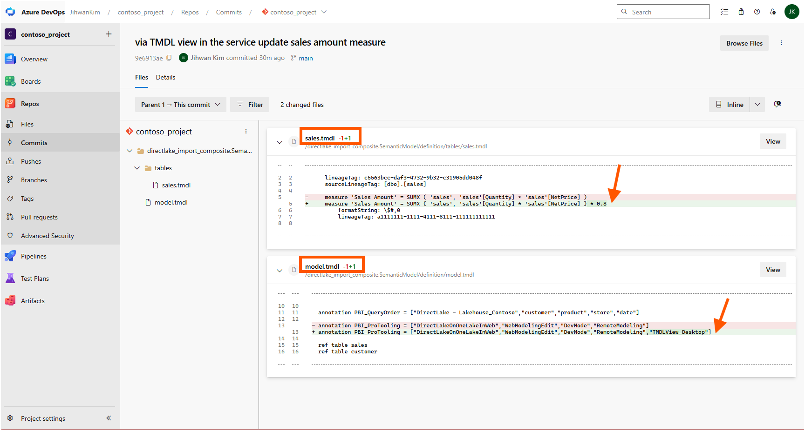

In this writing, I want to share how I tested TMDL View on the Web, the preview feature that brings a TMDL code editor into Power BI web modeling, by changing exactly one measure in the browser and following that change all the way into the Git repository behind my workspace.
The plan was deliberate. Editing a model in the browser is nothing new for me; I have changed measures and properties through web modeling many times, and the workspace has always carried those edits into Git. The new part is making the change as TMDL code. So the question I wanted answered was specific: "if I change one measure through TMDL view in the browser, what exactly shows up in Git?"
One measure, one multiplication. That was the whole experiment.
1. The Setup: One Model, One Measure, One Question
Microsoft announced the feature in TMDL View on the Web (Preview), under the section "What is TMDL View on the Web?", as a code editor for viewing and editing published semantic models as TMDL directly in the browser. The Power BI July 2026 Feature Summary lists it again in its "TMDL View on the Web" section under Modeling: model objects can now be scripted and changed from a code editor in the browser, with no Desktop session and no downloaded model files involved. TMDL view itself is not new; it has been in Power BI Desktop since early 2025, and the documentation on TMDL view covers the scripting workflow I already use daily. What is new is where the editor runs.
My test model is directlake_import_composite, a composite semantic model in my Contoso workspace with Direct Lake tables coming from Lakehouse_Contoso and two calculated tables built on top of sales. The workspace is connected to a Git branch, main, and at the start of the experiment the workspace and the branch were fully synced. That last part matters. A clean starting point means any diff I see afterwards belongs to my one edit and nothing else.
The target: the measure Sales Amount in the sales table, defined as SUMX ( 'sales', 'sales'[Quantity] * 'sales'[NetPrice] ). My edit would multiply it by 0.8. Not a realistic business change, and that is intentional; an obviously artificial change is easy to recognize in every diff layer it passes through.
2. Viewing Mode First: The Editor Opens Read-Only
Opening the model in web modeling shows a new TMDL View (Preview) tab at the bottom, next to Model view and DAX query view. The editor opens with a welcome script and two banners. One tells me I am in Viewing mode and need to switch to Editing mode to apply changes. The other says TMDL scripts are discarded on close.

Both banners are documented behavior, not quirks. The announcement's section "Key differences between TMDL View in Desktop and TMDL View on the Web" describes exactly these two differences in a comparison table: the web version introduces separate View and Edit modes, while Desktop has no mode distinction; and web scripts do not persist, while Desktop keeps TMDL scripts saved as part of the semantic model. I read the mode separation as a guardrail that Desktop never needed. In Desktop, my file system and Git protect me. In the browser, the model is live in the workspace, so a read-only default is the safer starting posture.
The script ephemerality is worth pausing on. Whatever I write in the web editor is gone when I close the model. For a quick one-time edit, that is fine. For a script that will be used again, the better practice is to save it as a file in the Git repository, where the team can find it, review it, and run it again.
3. Drag, Edit, Apply
After switching to Editing mode, I dragged the Sales Amount measure from the Data pane into the editor, and the editor generated a scoped createOrReplace script.

The ref table sales line is the part I appreciated most. The script does not restate the whole table; it references it and replaces only the objects listed underneath. That is the same scoped-scripting behavior I know from Desktop's TMDL view, and it means my one-measure edit cannot accidentally rewrite the other measures and columns in the table.
I appended * 0.8 to the expression and clicked Apply.

The editor confirmed with "Changes applied to the model." At the same moment, two warning icons appeared in the Data pane, next to Margin Tier by customer and Monthly Sales Summary.

In my model, both of those are calculated tables whose source expressions depend on Sales Amount: Monthly Sales Summary materializes "Revenue", [Sales Amount] through SUMMARIZECOLUMNS, and Margin Tier by customer buckets customers by [Gross Margin %], which is itself computed from [Sales Amount]. I read the icons as those tables reacting to their upstream measure changing, though I did not chase the warnings further in this session; that is an inference from the dependency chain visible in the TMDL files, not something the UI spelled out for me.
The measure change itself behaved exactly as I expected. The interesting part came next.
4. Source Control: Reading the Diff I Came For
Back in the workspace, the Source control panel showed one uncommitted change: directlake_import_composite, on branch main. Power BI web edits do not stay invisible in some service-side layer; the workspace immediately knows the model has drifted from its last Git sync.

Hovering next to the item exposes the review button that opens Change Review (preview), the side-by-side diff experience. The documentation on Compare code changes describes this flow in its "Example - Review commit changes" steps: Source control, Changes tab, review changes button, then a file-level diff of every modified file inside the item.
The first file was the one I came for. definition/tables/sales.tmdl showed a single changed line: the old Sales Amount expression removed, the new one with * 0.8 added. Format string untouched, lineage tag untouched, every other measure in the table untouched.

This is the answer to my original question, and it is a reassuring one. A TMDL edit made in the browser lands in source control as the same minimal, reviewable file change I would have produced by editing the PBIP folder locally. The scoped createOrReplace script did not bloat the diff, and the web pipeline did not reserialize the file in some diff-hostile way.
5. The Second File in the Diff
The item list in Change Review showed two modified files, not one. The other was definition/model.tmdl, and its diff was a single line as well.

I want to be precise about what I can and cannot say here. In my model.tmdl, the PBI_ProTooling annotation already carried a list of values matching the tooling surfaces this model has been touched by, and after my TMDL View edit the list gained "TMDLView_Desktop". I have not found a Microsoft Learn page or schema that documents the PBI_ProTooling annotation or its accepted values, so I would describe this as an observation in my file rather than a documented behavior. Even the value string raises a question I cannot answer from documentation: the edit happened in the browser, yet the recorded value says TMDLView_Desktop.
What I can say confidently is why the file shows up in the review at all. The "System files and system level changes" section of the same Compare code changes documentation explains that whenever Fabric detects a difference in underlying files or metadata, it marks the item as modified, which is exactly why the second file appears in the Changes list. Nothing is wrong. But a reviewer who expects a one-line measure PR and sees model.tmdl in the changed-files list needs to recognize this pattern for what it is: tooling metadata riding along with the functional change.
One edit, two changed files. That ratio is the real finding of this experiment.
6. From a DevOps Standpoint, This Is Foundational
Version Control: The Browser Becomes Just Another TMDL Client
My mental picture of the workflow used to have two tiers: real editing happens in local TMDL files under Git, and the Service is where models live after deployment. TMDL View on the Web collapses that separation without breaking the contract. The edit I made in the browser is not a special service-side state; it is an uncommitted change on main, waiting for a commit message like any edit from any client. I committed it from the Source control panel, and the commit in Azure DevOps shows the same two files with the same one-line changes. After a pull, my local clone has the same sales.tmdl I would have written by hand. The direction of travel reversed, but the repository stayed the single source of truth.

Code Review: Two Diffs Before the Pull Request
My one edit could be inspected in two diffs before any pull request. The first is Change Review in the workspace, which compares the current workspace against the last Git sync, so I could see exactly what my edit changed before writing a commit message. The second is the commit itself in Azure DevOps, where the same two files are now recorded in branch history and a reviewer can comment on them. Change Review answers "what did I just change in this workspace?", and the commit diff answers "what is entering the branch?". For a team adopting web editing, I would put the review checklist on the second one and teach reviewers one extra rule: a PBI_ProTooling line appearing in model.tmdl alongside a web edit is annotation noise, not a functional model change.
Governance: Write Permissions and Version History
The announcement's "Key differences" table also answers two governance questions in plain terms. Who can edit? TMDL View on the Web requires write permissions on the semantic model, so workspace roles decide who can use the editor; there is no side door. What happens after a bad edit? The web experience supports workspace version history, so an earlier version of the model can be restored. In a Git-connected workspace there is a second way back as well: revert the commit in the repository.
Closing Thoughts
This experience left me with a new mental model: TMDL View on the Web does not move my model away from Git — it moves the editor closer to where the model lives, and Git review is still where every edit becomes accountable.
The experiment also sharpened a review habit I will keep: when a model edit arrives from the browser, expect two files in the diff, and know which of the two carries the meaning.
I hope this helps having fun in exploring TMDL View on the Web and embracing this new era of code-first semantic modeling in the browser!